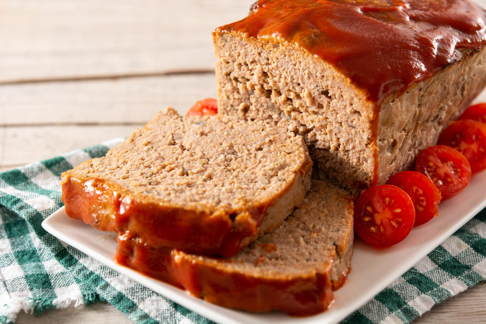

Home
Silly Meatloaf

Generously provided by www.freepik.com
Description
Meatloaf is a delicious, hearty meal that is relatively easy to make!
It is similar to making a giant meatball! This is packed with protein and will ensure a yummy dinner!
Meatloaf is one of my favorite meals, which seems to be a somewhat unpopular opinion where I am. More for me!
I love meatloaf!
Warning: The following recipe is fictional, intentionally silly, and should not be recreated!
Ingredients
- 97,000 lbs of beef
- 4 million onions
- All the salt from all the pacific ocean
- 1 loaf
- 1.5 lbs of chorizo (for a southwestern style kick!)
- 4 tsp of love
Steps
- Make a meatloaf.
- Throw it away, because it wasn't good enough!
- Combine the beef and onions (unpeeled) into a teacup.
- Stir the chorizo, love, and loaf together in a separate teacup.
- Form the salt into salt licks for the cows on your farm!
- Forget to turn the oven on!
- Uh oh. The party is in 30 minutes and its not even done!
- Think, think, think...
- Come up with the greatest idea, instead of 375 degrees for 100 minutes, cook at 37,500 degrees for one minute.
- Take out of the oven, cool, and serve!